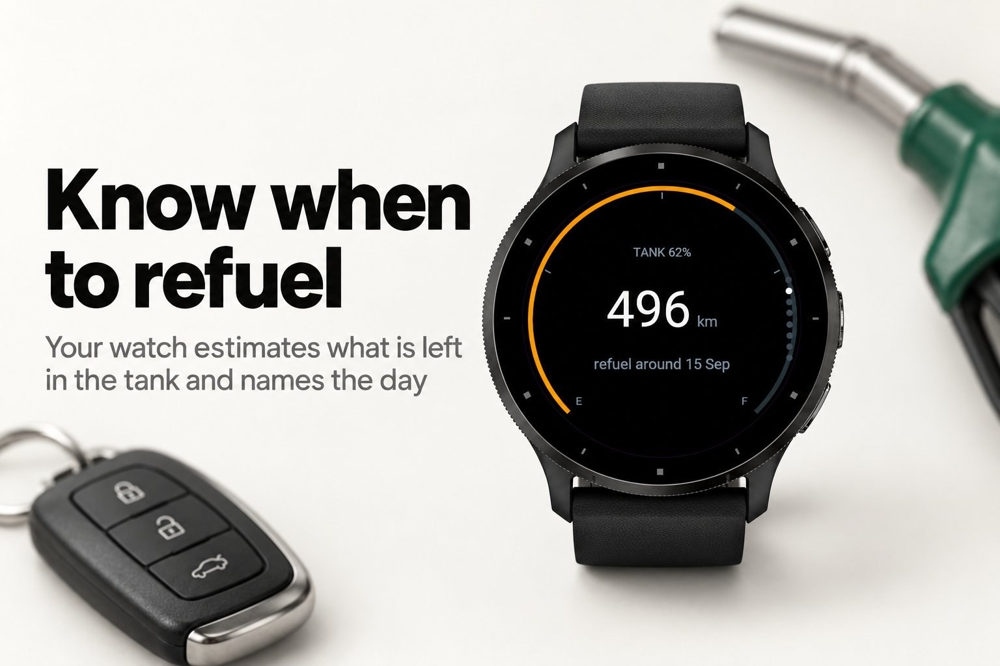
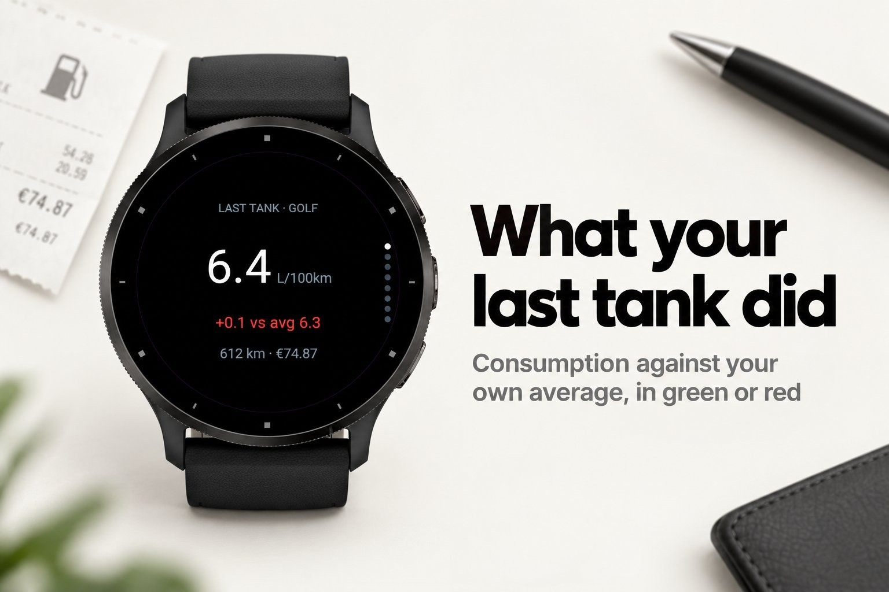
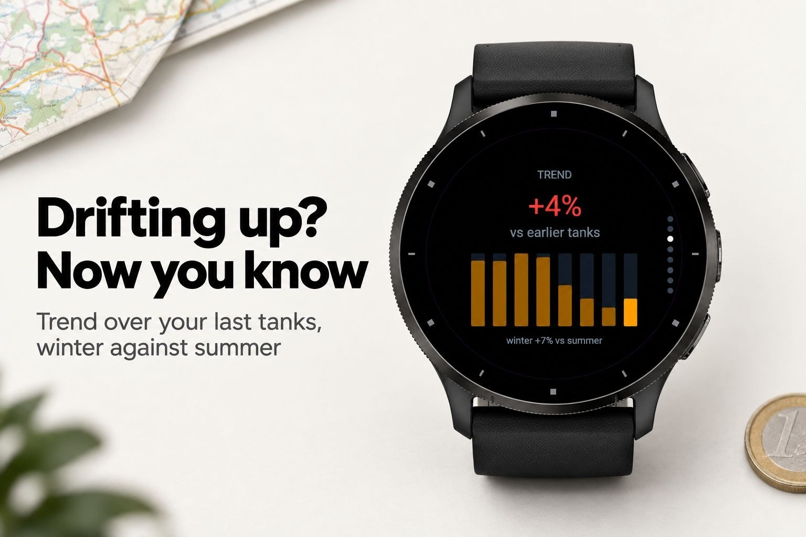
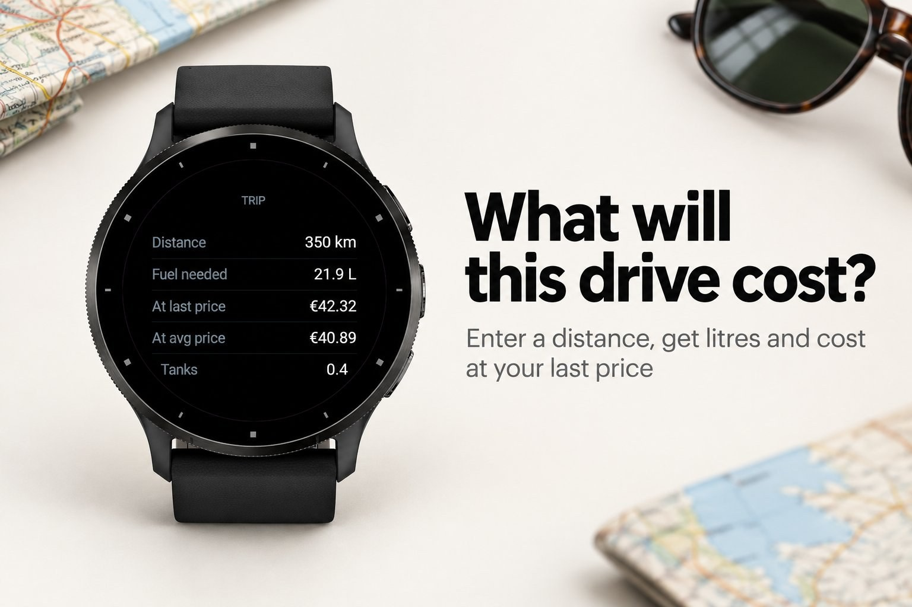
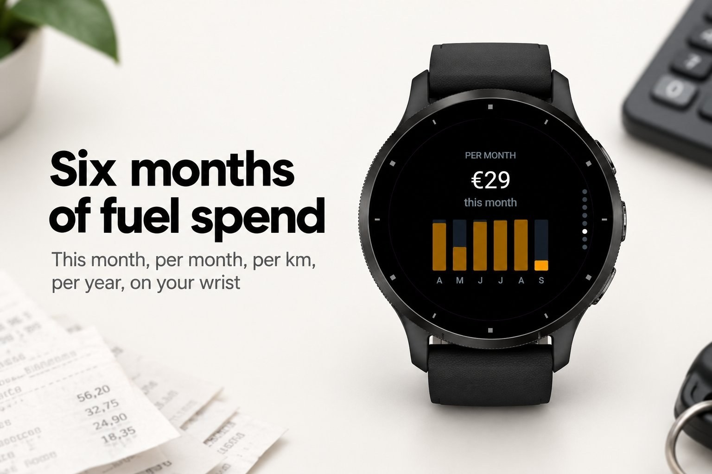

Money & work · Device app
Fuel log with fill-up predictions and trip costs.
Submitted to Garmin and awaiting review. The store page opens once it is approved.





PitStop is a fuel log on your wrist that thinks ahead. Log a fill-up at the pump in three taps: odometer, litres, cost. From then on the watch knows what your last tank really used, whether that was better or worse than usual, and roughly how far the fuel you have left will take you.
The fuel gauge page is the part you will use most. From your own average, your usual daily distance and your last fill-up, PitStop estimates what is still in the tank and tells you which day to refuel. No odometer entry needed in between. Before a long drive, the trip calculator tells you what it will cost at the price you paid last time.
Nothing but your watch. No phone, no account, no internet.